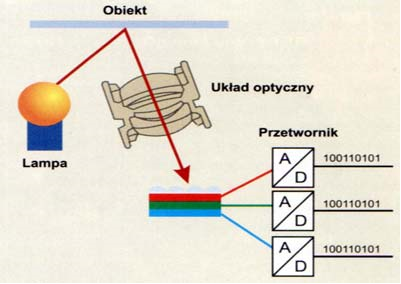

Urządzenia wejścia
Skaner| Aparat cyfrowy
Skaner
Przekształca optyczne informacje na komputerowe dane; za pomocą czujników bada kolor i jasność odczytywanego obrazu; po przekazaniu informacji o obrazie do komputera można je w dowolny sposób modyfikować.
Parametry skanera:
- wielkość obszaru skanowania,
- rozdzielczość optyczna (mierzona w DPI) - gęstość elementów światłoczułych na listwie przesuwanej nad skanowaną ilustracją; im jest ich więcej, tym więcej szczegółów jest w stanie wychwycić;; rozdzielczość podawana jest w postaci dwóch liczb (np. 300x600 dpi.); pierwsza z nich odnosi się do liczby elementów skanujących znajdujących się na jednym calu powierzchni elementu; każdy z takich elementów tworzy jeden piksel informacji w osi poziomej; druga liczba oznacza odległość (lub krok), o jaką ramię przesuwa się pomiędzy ekspozycjami. Liczba 600 dpi oznacza więc że każda nowa próbka jest tworzona co 1/600 cala.
- głębia kolorów - ile bitów informacji potrzebnych jest do opisania koloru punktu w standardzie RGB;im większa jest to liczba, tym więcej kolorów skaner potrafi rozróżnić, np.:
| GŁĘBIA [bit] |
ILOŚĆ KOLORÓW |
| 1 |
2 |
| 8 |
256 |
| 16 |
65 536 |
| 24 |
16 777 216 |
- rozdzielczość interpolowana - umiejętność sztucznego podwyższania rozdzielczości otrzymywanego obrazu cyfrowego.
|  |
| Zasada działania skanera, źródło PC World Computer. |
Aparat cyfrowy
Nie potrzebuje filmu fotograficznego; docierający do niego obraz trafia na matrycę LCD lub CMOS, gdzie jest przetwarzany i zapisywany w postaci cyfrowej (zazwyczaj na karcie pamięci Flash).
Najważniejsze parametry:
- rozdzielczość (wielkość matrycy),
- technologia CCD lub CMOS,
- zoom optyczny i cyfrowy.